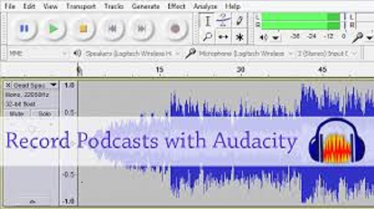

|  |
Audacity is a powerful audio editing software that allows users to manipulate audio files. You can cut, copy,
paste and loop any audio that's imported in to Audacity. Effects can be added to enhance or tweak sounds and levels
(Fade in or out, Reverb, Echo, Delay etc.). Users can also save and export their projects in many audio formats
(WMA, WAV, MP3 etc.). In the classroom, Audacity can be used for Podcasting and to pre-record lectures. Audacity is ideal for
all auditory learners.
I created this first audio file using my recorded voice defining and explaining Podcasting,
and I used Kid Cudi "Surfin" featuring Pharrell as the background music track. I used my computer's built in mic to record my vocals.
I used the Time Shift Tool to move my vocals to where I wanted them to start at. I normalized my vocals, and used the equalizer to
enhance the sound. I added reverb, echo and delay at the end of my last two words spoken. Then I faded out my vocals at the end. I
trimmed off the rest of Kid Cudi's track that I no longer needed and deleted it. I only used the beginning introduction beat. I used
the gain feature in Audacity to control and lower the volume level of the background music track. At the ending of the Podcast, I
faded the track out right as the lyrics to the song begin to start. For the last step, I mixed and rendered the file and saved and
exported the file as a MP3. The reason why I decided to compose this musical piece was to show how audio can be used by both teachers
and students in the classroom to enhance learning.
Example 1 I created this second audio file using the vocals from former President Barack Obama's Education Speech. I used
YouTube downloader to convert the mp4 speech into a mp3 file, so that I can import only the audio file into Audacity. Next, I imported and cut
the speech (audio) and used the Time Shift Tool to move and place Obama's vocals where I wanted them to begin and end, then I deleted the rest.
I had to extend the applauses by copying a small portion and kept repeating it. Then I faded out the applauses at the end of the speech. I
normalized and I used the equalizer to enhance and improve the vocals. For the background track, I used Aretha Franklin's "The Greatest Love of All"
(live in paris 1977). I faded in Aretha Franklin's track in the beginning, then I used the gain to lower the volume level of the track so that Obama's
vocals are louder and up front in the mix. For the last step, I mixed and rendered the file and saved and exported the file as a MP3. The reason why
I created this audio mix is because I wanted to reiterate to students the importance of education, and to instill in them hope and ambition to succeed
and become productive citizens in our society. The inner-city youths need more positive male role models in their lives that they can look up to. So,
I thought I give students a little words of encouragement. This is a message to let students know that there are people out there that care for them
and their future.
Example 2Audio File 1: Podcasting
Audio File 2: The Importance of Education